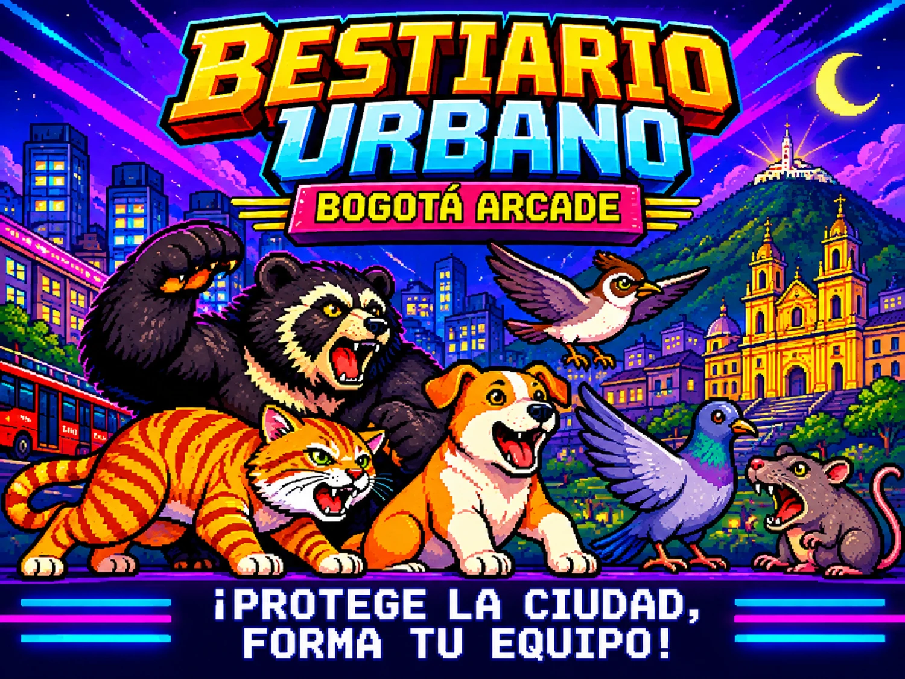

TÚ · GUARDIÁN URBANO

Seis animales de la ciudad están enojados, y casi siempre la causa es humana. Recorre el parque, los tejados, la plaza, el barrio, las basuras y el páramo. Usa la acción de manejo correcta para calmarlos y sumarlos a tu equipo.